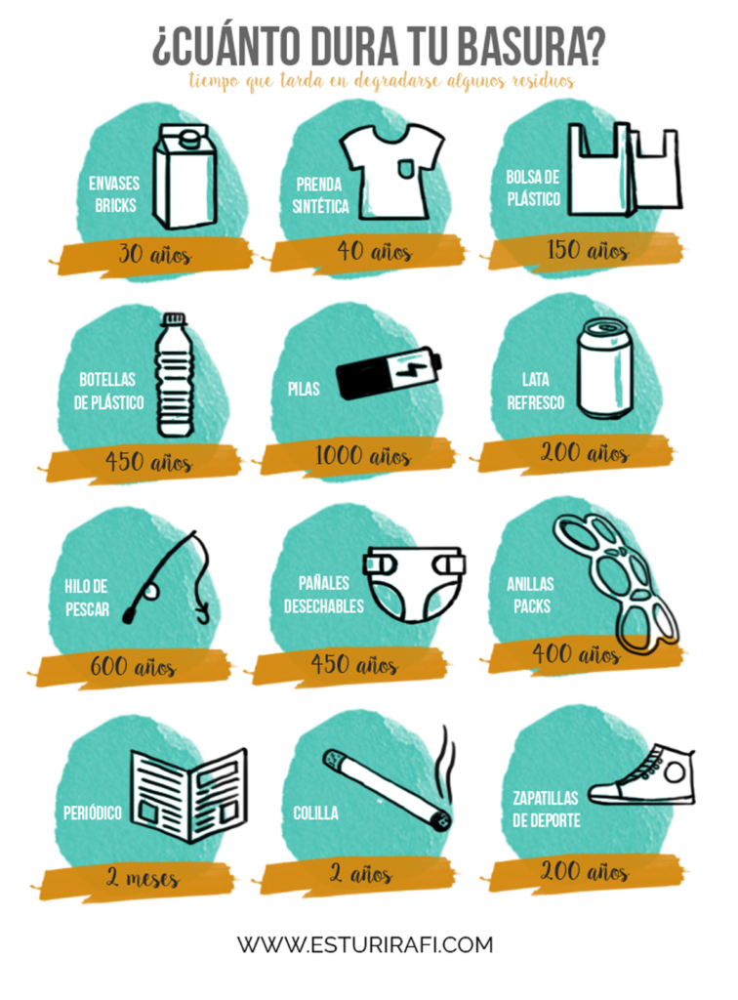
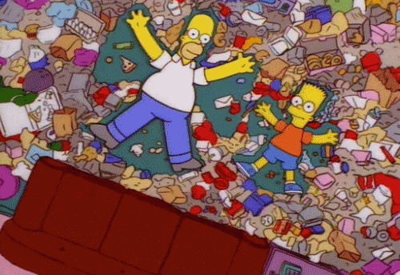

Determinados artículos de plástico pueden demorar hasta 1000 años en descomponerse en los vertederos. Las bolsas de plástico que utilizamos cada día toman unos 150 años en biodegradarse, mientras que las botellas de plástico (fabricadas de PET o PVC) podrían necesitar un mínimo de 450 años.

